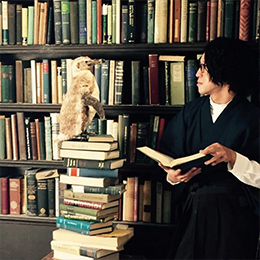

<div id="modal" class="profile">
  <div class="modal-page">
    <ul>
      <li>
        <p class="airtist">
          
          <span>烏屋茶房</span>
        </p>
        <div class="text">
          2014年3月にVOCALOIDを使用した、コンセプトアルバム『goodnight, wonderend』でdue（dwango）よりメジャーデビュー。<br>
          2015年、TVアニメ「VALKYRIE DRIVE -MERMAID-」のEDテーマを作詞・作曲したのを皮切りにアニメソングの分野にも進出。<br>
          2019年10月に発表された日清カレーメシ「カレーメシ×ゾンビランドサガ」リリックビデオにて商業映像作家としてもデビュー。<br>
          2020年、TVアニメ「ダンベル何キロ持てる？」にて作詞・作曲をしたOPテーマ「お願いマッスル」のMVがYouTube再生回数2億回を達成。<br>
          2021年、THE IDOLM@STERシリーズ 15周年 イメージソング2021「VOY@GER」にて作詞を担当するなどさらに活動の幅を広げている。
        </div>
      </li>
    </ul>
  </div>
</div>